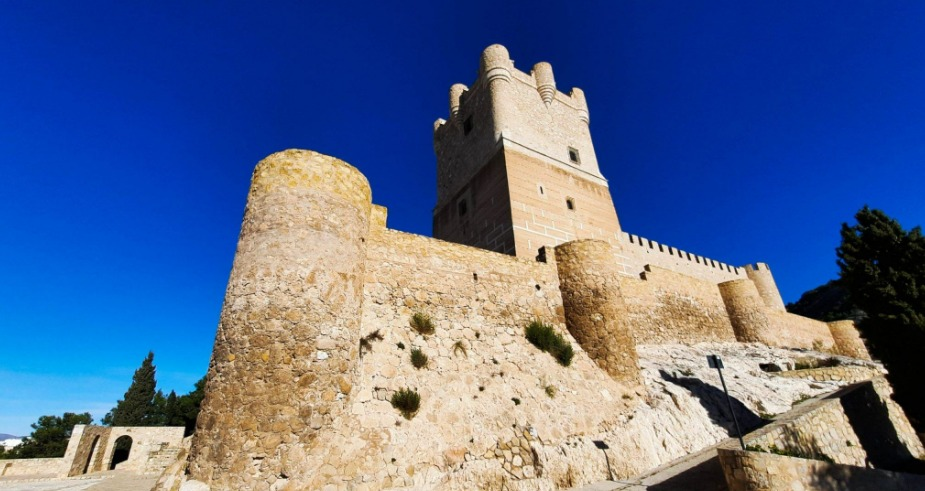
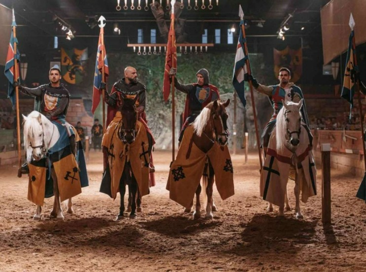

Alicante cuenta con una vasta historia medieval, reflejada en sus impresionantes castillos. Entre los más famosos se encuentra el Castillo de Santa Bárbara, que ofrece vistas panorámicas espectaculares y cuenta con un museo que relata la historia de la región. Otros castillos importantes incluyen el Castillo de Biar y el Castillo de Villena, ambos ejemplos de arquitectura militar medieval que transportan a sus visitantes a otra época.
A lo largo del año, Alicante y sus alrededores celebran una serie de festivales medievales que recrean la atmósfera de la Edad Media. Entre ellos destacan las Jornadas Medievales de Villena y el Mercado Medieval de Orihuela. Estos eventos incluyen recreaciones históricas, justas, mercados de época y espectáculos que transportan a los asistentes a una era pasada.
En Alicante, puedes vivir experiencias inmersivas que te transportan a la época medieval. Desde cenas temáticas con menús inspirados en recetas de la Edad Media hasta recreaciones de justas y torneos, cada actividad está diseñada para que los participantes sientan la historia en primera persona. Estas experiencias suelen incluir vestimenta de época y la oportunidad de participar en actividades medievales como la arquería y la esgrima.
